RED FOX PRESS
RedFoxPress was created to enable a group of artists to sell their work online. The site includes prints, photographs, and books located in Achill Island in the West of Ireland.
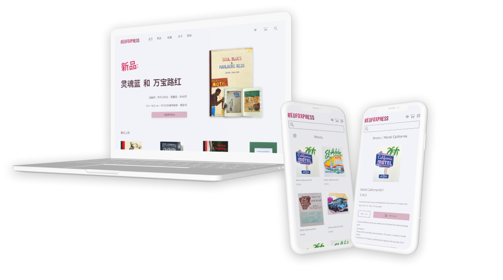Problem:
The website's design and functionality make it difficult for users to effectively navigate and search for products. This can result in a frustrating user experience, causing visitors to leave the site without making a purchase. Additionally, the website's content is not easily readable or comprehendible, making it challenging for users to understand what the website is selling. These factors combined can make it difficult for the client to achieve their goal of increasing traffic and online purchases.
Solution:
Improve the digital presence and expand its reach by redesigning the website. Being able to help users to find the type of artwork they want, increase traffic and a greater number of purchases made online.
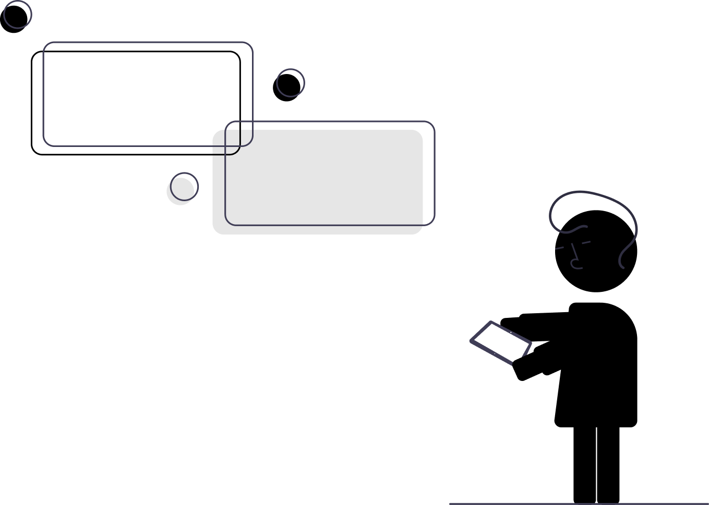
- 4 weeks
Duration
- 3 people
Team
- Project Manager
- UX Researcher
- UI Designer
- Front End Developer
Role
- Adobe Illustrator
- Adobe Photoshop
- Figma
- HTML/CSS
- Bootstrap
- Google Drive
Tools Used
Proto Persona
We aimed to reach low-budget art students as our target audience and user base, based on the stakeholders' assumptions. This approach allowed us to quickly start the design and development process without getting overly entangled in the finer details of user behavior. To gain a deeper understanding of their needs and challenges, we created a user profile or persona. This helped us to develop more effective solutions by giving us a better insight into the users' pain points, requirements, objectives, and key characteristics.
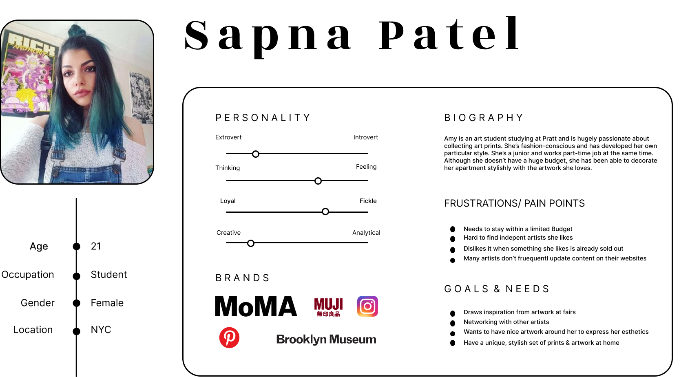5 Seconds Impression Test
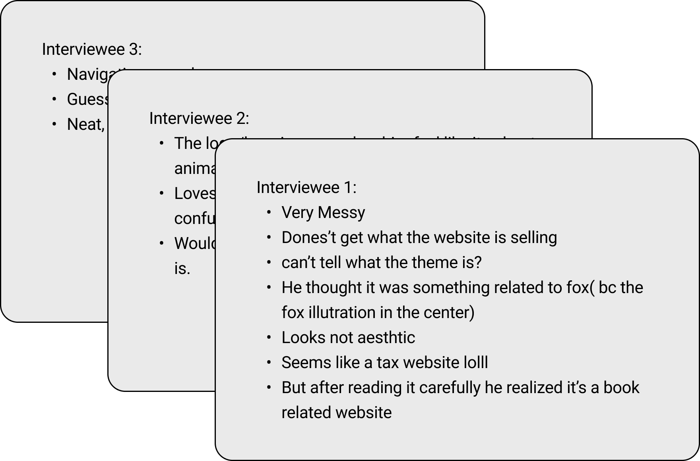
We initiated our redesign process by conducting a 5-second impression test on the original website to gather more relevant opinions and insights from users. The aim of this test was to evaluate what information users retain and what kind of first impression they form within the first five seconds of viewing the website. The feedback we received from the test was largely consistent with our own observations as a team, which strengthened our confidence in our approach to redesigning the website. This helped us to move forward with our brainstorming process with a clearer understanding of what users were looking for and what they expected from the website.
Affinity Diagram
We collected the feedback from our interviews and organized it into distinct categories. Our team then grouped these ideas into their natural connections following a brainstorming session. This allowed us to effectively generate, manage, and synthesize information related to a product, process, complex issue, or problem. By organizing and categorizing the feedback, we were able to better understand and address the needs and concerns of our target audience, which was essential for our redesign process.
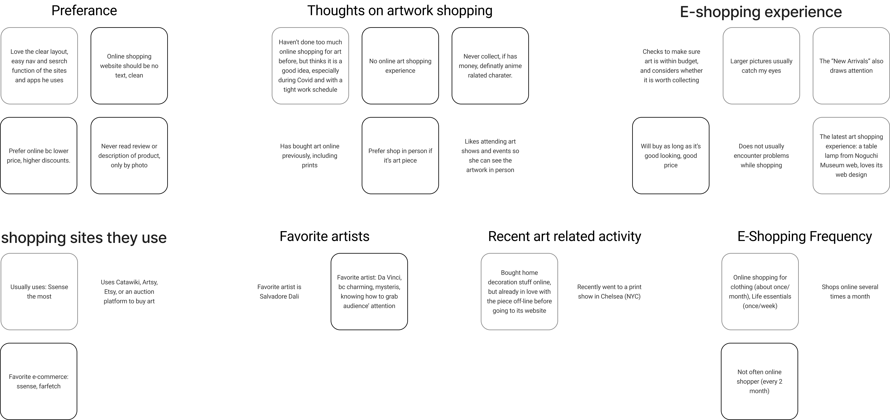Empathy Map
We employed this technique to gain a deeper understanding of our customers. This helped us to learn about their behaviors, decisions, thoughts, feelings, and actions. By externalizing the knowledge we gained about our users, we were able to establish a shared understanding of their needs, which was essential for making informed decisions and providing effective solutions. This approach allowed us to create a more human-centered design that met the needs of our target audience and improved their overall experience.
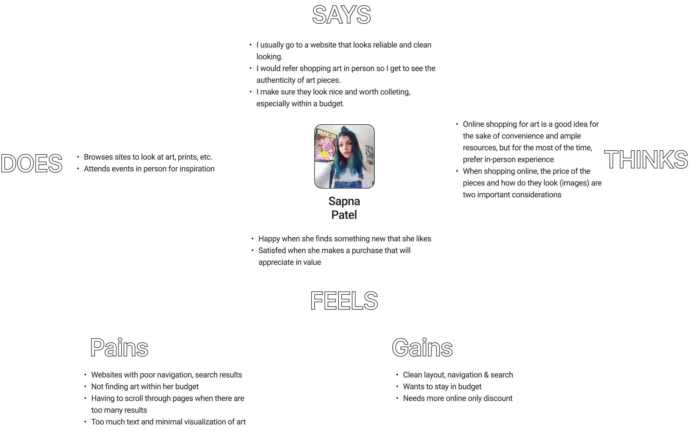Site Map
A Site Map plays a crucial role in our pre-design planning process. The example shown on the side represents our home page navigation system, which we reorganized to group similar items together, making it easier to read and understand. Our modifications to the Site Map improved its clarity and functionality, helping our stakeholders to quickly grasp the number of pages on the site and the overall layout. This not only saves time, but also ensures that our design aligns with our stakeholders' expectations and needs.
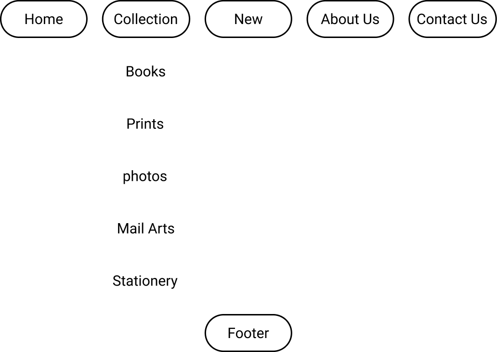Mind Map
The mind map, which illustrates the potential paths users may take while navigating our website, and the content they will encounter on each page, is a crucial tool for UI design. This step provides us with a clear understanding of the user's journey through the site and is highly beneficial for our design process. Our team relies heavily on this mind map as it helps us to work collaboratively and logically map out the overall look and feel of the website. By using the mind map, we can ensure that our design is both user-friendly and meets the needs of our target audience.
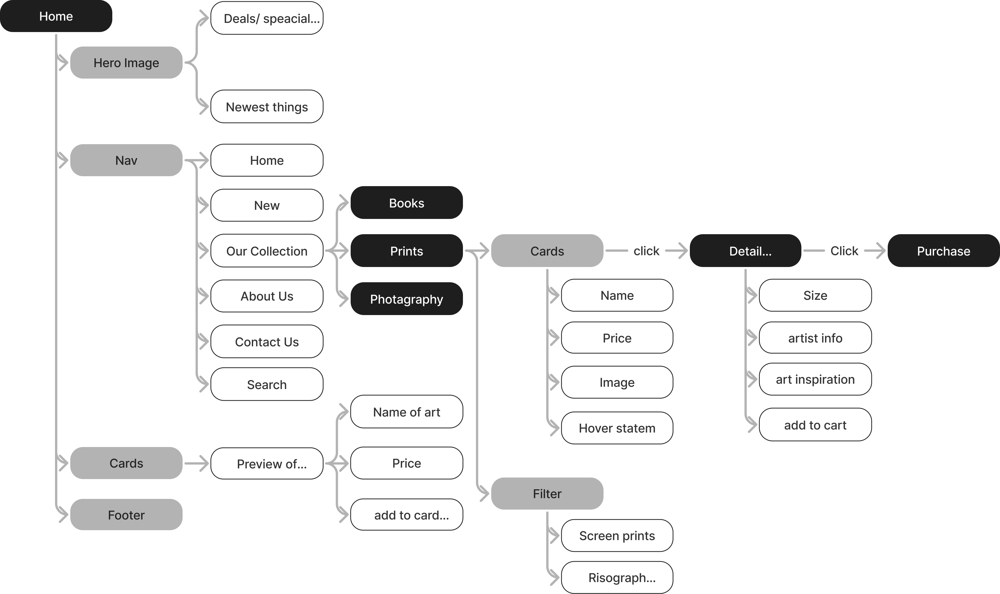
How Might We
We recognize that the layout and menu system of the website can play a significant role in determining the ease with which users are able to find the information and materials they are looking for. How might we enhance the layout and menu system on RedFoxPress to make it easier for art enthusiasts to locate the materials they are interested in?
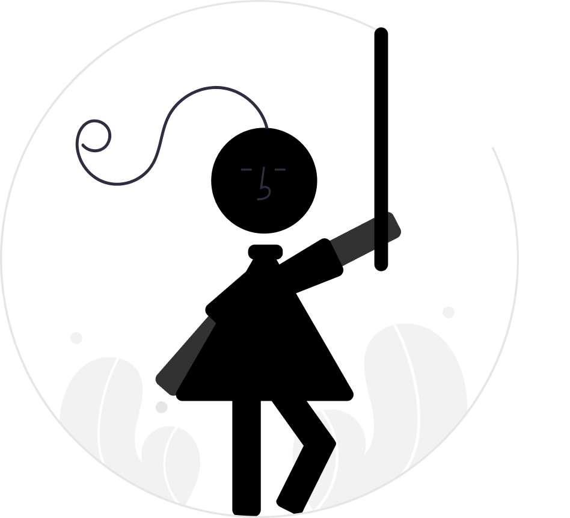
Point of View Statement
RedFoxPress was established as a platform for artists to showcase and sell their creative works, including prints, photographs, and books. However, our team has noticed that the current layout and organization of the website may be hindering the user experience and causing potential customers to leave the site without making a purchase. The disorganized layout and navigation system of the site can make it challenging for users to quickly and easily find the items they are interested in. This can lead to frustration and a decreased likelihood of users making a purchase on the site.
Mood Board
We utilize a mood board to coordinate the inspiration for our project and sharpen its style before embarking on the actual design process. The mood board provides a visual representation that is comprised of images, text, and physical samples arranged in a cohesive manner. Our team members source valuable resources to maintain a consistent style and aesthetic throughout the project. The mood board serves as a central reference point, and we frequently consult it to ensure that everyone is aligned. We were greatly inspired by Cornella's simple approach to an online book shop, particularly their light font weight. Our design aims to be charming and playful with strategically placed pops of color to add some visual interest.
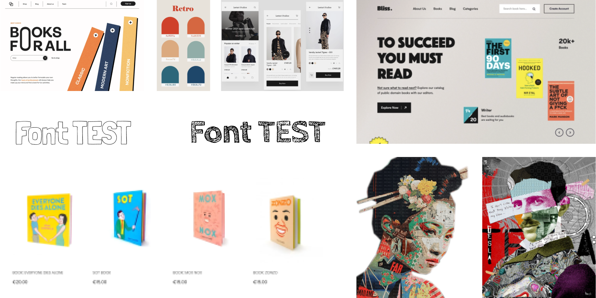Style Guide
With the mood board as a foundation, we then establish a stylesheet to guarantee that all contributors are following a consistent and coherent style that aligns with the company's image and reinforces brand uniformity across all aspects, including design and writing.
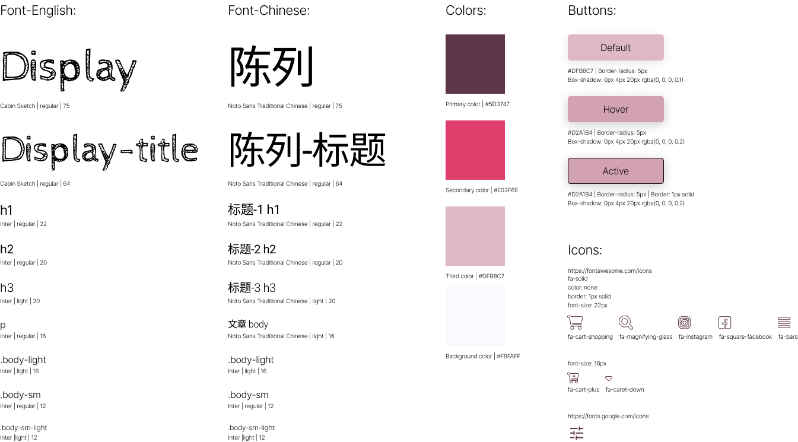
Wireframing
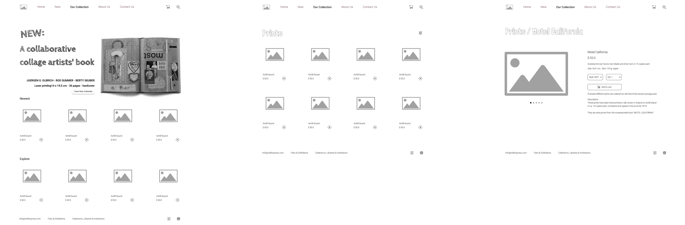High Fidelity